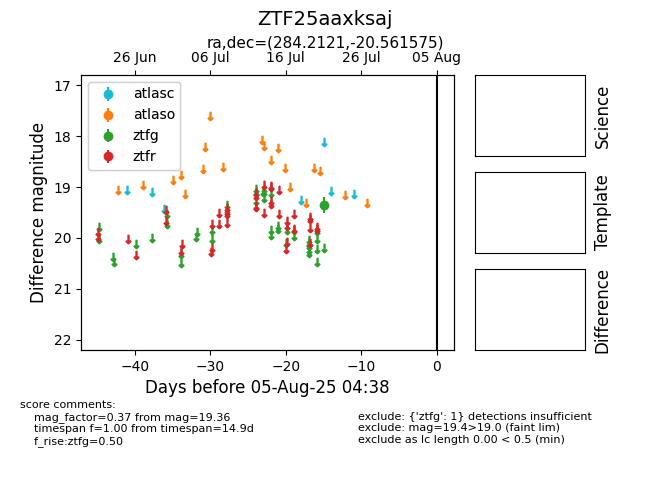

Target ZTF25aaxksaj at 2025-08-05 04:38, see:
FINK: fink-portal.org/ZTF25aaxksaj
Lasair: lasair-ztf.lsst.ac.uk/objects/ZTF25aaxksaj
ALeRCE: alerce.online/object/ZTF25aaxksaj
alt names
ZTF25aaxksaj (ztf,fink)
coordinates:
equatorial (ra, dec) = (284.2121,-20.56157)
galactic (l, b) = (15.0227,-10.35918)
photometry
last ztfg=19.36
1 ztfg detections
